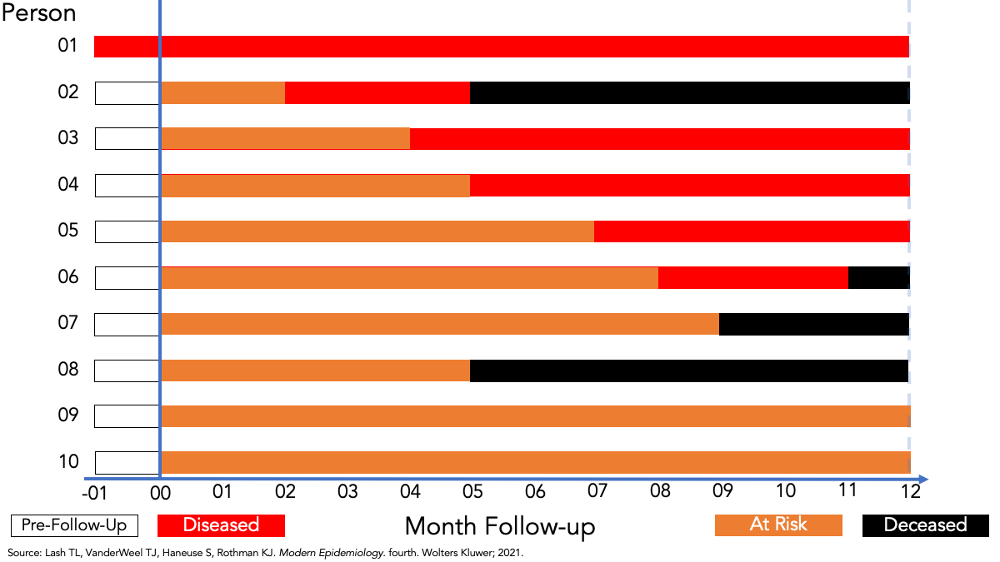
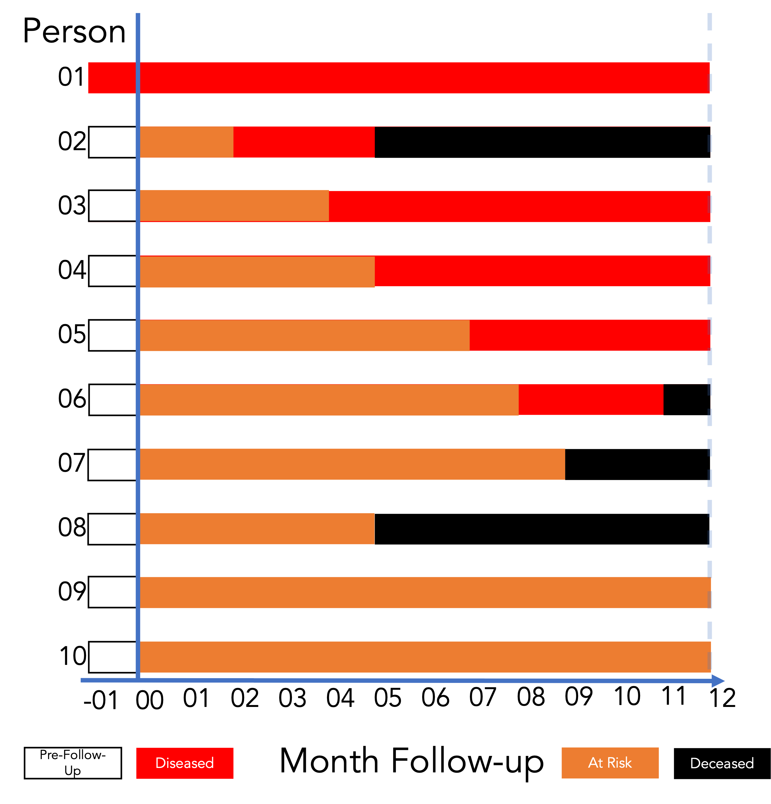

Define epidemiology and key associated terminology, especially confounding.
Distinguish among association, prediction, and causation.
Explain the Rothman model of sufficient-component causes (RMSCC) and the concept of multifactorial causation.
Explain the limitations of anecdotal evidence in drawing epidemiologic conclusions.
Explain why disseminating risk information is sometimes necessary but rarely sufficient to improve population health.
Lecture Learning Objectives
By the end of this lesson, you’ll be able to:
Define counts and rates.
Distinguish crude, specific, adjusted rates.
Compute and interpret prevalence and incidence.
Review: Choose the Snapshot
With your group:
Choose month 2, 6, or 10.
Count the people living with disease.
Count the living members of the population.
Calculate and interpret the prevalence proportion.
Be ready to explain your numerator and denominator.
Prevalence Describes a State
Disease present
Who has disease?
A state observed at a moment or over a period
Incidence Describes a Transition
Disease absent
→
Disease present
At risk
during follow-up
Who developed disease?
Incidence counts new transitions during a specified period.
One-Time vs. Recurrent Events
We can measure the incidence of:
One-time events, such as Parkinson’s disease or a first cancer diagnosis
Recurrent events, such as respiratory infections during a calendar year
Incidence Proportion and Risk
Incidence proportion and “risk” are sometimes used interchangeably in epidemiology.
Risk can be ambiguous. Incidence proportion is less so.
Incidence Measures
Incidence Count
A count of new occurrences of a condition in a population at risk for the occurrence during a given time frame.
Range: 0 to infinity.
Incidence Proportion
The proportion of the population that experiences a new occurrence of the condition among those at risk of experiencing a new occurrence during a given time frame.
Like all proportions, it falls between 0 and 1.
Incidence Proportion: Formula
\[
\text{Incidence proportion} = \frac{\text{Count of new occurrences}}{\text{Population at risk}}
\]
Follow-Up Experience and New Occurrences

Incidence Proportion Over 12 Months

\[
\frac{\text{Count of new occurrences}}{\text{Population at risk}}
\] \[
\frac{5}{9}
\] \[
\approx 0.56 \text{ or } 56\%
\]
Interpreting Incidence Proportion
Among the members of the population, the incidence of disease over 12 months of follow-up was 0.56.
Fifty-six percent of the population developed disease over 12 months of follow-up.
The population accumulated 64 person-months at risk during 12 months of follow-up.
The same amount is 5.33 person-years at risk during 12 months of follow-up.
Follow-Up Experience for the Incidence Rate
Incidence Rate: Calculation
\[
\frac{\text{Count of new occurrences}}{\text{Person-time at risk}}
\] \[
= \frac{5}{64\text{ person-months}}
\]
\[
\approx 7.8\text{ per 100 person-months}
\]
Interpreting the Incidence Rate
The incidence rate of disease among the members of the population was 5 cases per 64 person-months during 12 months of follow-up.
Equivalently, the incidence rate was 7.8 cases per 100 person-months during 12 months of follow-up.
Inverse/Reciprocal Time (\(\text{time}^{-1}\))
If a study follows 100 people for 5 years, what is the total person-time?
The total person-time is 500 person-years.
If 10 people experience the event of interest, what is the incidence rate?
The incidence rate is: \(\frac{10 \text{ cases}}{500 \text{ person-years}} = \text{0.02 cases per person-year}\)
The unit is \(\text{0.02} \text{ time}^{-1}\). This reciprocal time unit means that, on average, 2% of the population at risk will experience the event each year.
But why is it called “reciprocal time” and why is it written as \(\text{time}^{-1}\)?
Why Is It Called Inverse/Reciprocal Time?
It is called reciprocal time and written as \(\text{time}^{-1}\) because of basic algebra and the rules of mathematical exponents.
In mathematics, the reciprocal of any number or variable is just 1 divided by that variable.
The reciprocal of 5 is \(\frac{1}{5}\)
The reciprocal of Time is \(\frac{1}{\text{Time}}\).
When we calculate an incidence rate, the formula is: \(\frac{\text{Count of new occurrences}}{\text{Person-time at risk}}\)
Because the unit of time sits in the denominator (the bottom of the fraction), we are multiplying the number of cases by the reciprocal of time.
Why the Negative Exponent (\(\text{time}^{-1}\))?
In algebra, a negative exponent is a shorthand way of writing a fraction where the variable is on the bottom. The standard rule is: \(\frac{1}{x} = x^{-1}\)
If our unit of time is years, then: \(\frac{1}{\text{year}} = \text{year}^{-1}\)
So, when we see a rate written as \(\text{0.02} \text{ time}^{-1}\), it literally means 0.02 per year or \(\frac{0.02}{\text{year}}\).
Using the negative exponent is simply the standard scientific way to write “per year” on a single line without needing to draw a fraction bar.
Mortality Rates: Incidence of Death
Death is another new event we can count over time.
\[
\text{Crude mortality rate} = \frac{\text{Deaths during the year}}{\text{Midyear population}} \times 1{,}000
\]
Hypothetical town: 80 deaths during one year; 10,000 residents at midyear.
\[
\frac{80}{10{,}000} \times 1{,}000 = 8\text{ deaths per 1,000 residents that year}
\]
Crude: all causes of death, across the whole population.
Specific: narrow the cause or population, such as cancer deaths or deaths among adults ages 65+.
Natality Rates: Counting Births
Natality refers to births. We again relate new events to a population over time.
\[
\text{Crude birth rate} = \frac{\text{Live births during the year}}{\text{Midyear population}} \times 1{,}000
\]
Hypothetical town: 120 live births; 10,000 residents at midyear.
\[
\frac{120}{10{,}000} \times 1{,}000 = 12\text{ live births per 1,000 residents that year}
\]
This describes births in relation to the whole population.
The general fertility rate uses women ages 15–44 as its denominator, by U.S. statistical convention.
A Familiar Name Can Hide a Different Denominator
Always check what is being divided by what.
Measure
Numerator
Denominator
Case-fatality proportion
Deaths from the disease among a defined group of cases
All cases in that group
Infant mortality rate
Deaths before age 1 during a year
Live births during that year
Hypothetical examples:
Case fatality: 3 deaths among 100 cases followed through illness → 3% of those cases died from the disease.
Infant mortality: 6 infant deaths and 1,200 live births → 5 deaths before age 1 per 1,000 live births that year.
Why Adjust a Rate?
A town with more older adults can have a higher crude death rate even when its age-specific rates are the same.
Hypothetical example: one year, 10,000 residents in each town.
Age group
Town A population
Town B population
Deaths per 1,000 in both towns
Under 65
9,000
5,000
2
65+
1,000
5,000
20
Town A: 18 + 20 = 38 deaths → 3.8 per 1,000.
Town B: 10 + 100 = 110 deaths → 11 per 1,000.
What would the comparison look like if both towns had the same age mix?
Age Adjustment: Use the Same Age Mix
AI-created draft — needs review
Direct age adjustment takes a weighted average of age-specific rates using the same age weights for every population.
For our example, choose a standard population that is 80% under 65 and 20% ages 65+.
In a survey conducted today, 12 of 40 students report riding a bicycle to campus; 28 do not. Calculate the ratio of bicycle riders to nonriders, the proportion who ride, and the percentage who ride.
Riders to nonriders = 12/28 = 3/7, or 3:7: three riders for every seven nonriders.
The proportion who ride is 12/(12+28) = 12/40 = 0.30.
The percentage is 0.30 × 100 = 30%.
The ratio compares riders with nonriders; the proportion and percentage compare riders with all surveyed students.
All three descriptions refer to this survey today.
Review: Prevalence and Incidence
On January 1, 2026, 20 of 200 adults had hypertension. During 2026, 36 of the remaining 180 develop it. Everyone is followed for the full year. What are the January 1 prevalence proportion and the 2026 incidence proportion, respectively?
In a 6-month study, four athletes contribute 2, 4, 6, and 6 months at risk of a first ankle injury. The first two are injured at months 2 and 4; the others remain injury-free. Calculate person-time and the incidence rate per 100 person-months.
Among people tested at a clinic today, the odds of a positive test are 3:2. What probability of a positive test corresponds to these odds? Show the calculation and express the answer as a percentage.
Two counties have the same death rates within each age group in 2026, but County A has a larger share of older residents and a higher crude death rate. What does applying the same standard age distribution to both counties accomplish?
A. It changes the actual number of deaths recorded in each county.
B. It removes every possible source of bias from the comparison.
C. It makes each county’s age-specific death rates equal to its crude rate.
D. It compares summary death rates using the same age mix.
During 2026, a county records 360 deaths from all causes and has a midyear population of 90,000. Which statement correctly reports its crude mortality rate per 1,000 residents?
A. 0.4 deaths per 1,000 residents during 2026.
B. 4 deaths per 1,000 residents during 2026.
C. 4 deaths per 1,000 people who died during 2026.
During 2026, a town records 210 live births. Its midyear population is 14,000, including 3,000 women ages 15–44. Calculate the crude birth rate and the U.S. general fertility rate, each per 1,000. Explain why the answers differ.